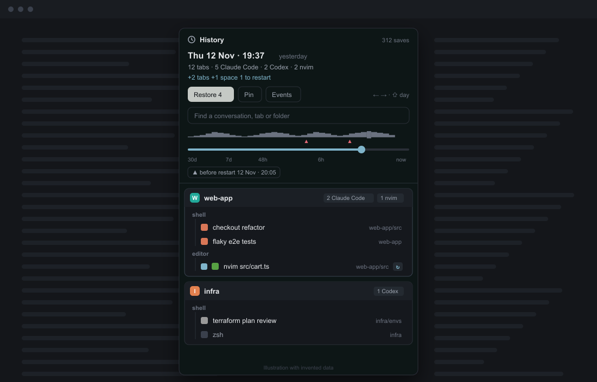

curl -fsSL https://raw.githubusercontent.com/miguelalexanderdiaz/herdr-session-restore/main/install/install.sh | shsession-restore
A History for Herdr. It saves what every pane runs, brings it back after a reboot or a crash, and lets you go back to an earlier save. Like tmux-resurrect and tmux-continuum, with a timeline.

What you get
- Saves of your spaces, tabs and panes, with each pane's folder and what it runs, once every 60 seconds. A save is only kept when something changed.
- Back after a reboot. Herdr gives every tab a fresh shell; session-restore restarts what ran there: agent conversations, resumed by their id, and programs on a short allowlist.
- A timeline. A slider over the saves, an activity strip, "before restart" jumps and a search box. Every space, tab and pane is compared with now; Restore adds back what is missing and never closes anything.
- Any agent, any layout. Seventeen agents resume by id. The History opens as a popup in any layout.
Quick start
macOS and Linux
Windows (PowerShell)
irm https://raw.githubusercontent.com/miguelalexanderdiaz/herdr-session-restore/main/install/install.ps1 | iexIt asks before writing anything. Then add the background saver to each layout you use (one line per layout), and Ctrl+Shift+O opens the History.
Read next
- Install
One command, by hand, the layout line, agents' hooks; uninstall.
- Usage
The window, the timeline, restoring, what comes back after a reboot.
- Configuration
Agents and their resume commands, the allowlist, keeping saves, files.
- Troubleshooting
Nothing saved, nothing restarted, an agent that does not resume.
Privacy and permissions
- Network: none.
- Runs: Herdr's
hc:hc getto see what each pane runs,hc server statusto tell a restart, andhc sendto type a restart line into a pane that is a bare shell. Andherdr-app do, only to recreate the tabs and spaces you choose to restore. - Reads: Claude Code's
~/.claude/sessions/<pid>.jsonfor conversation ids and names;~/.claude/history.jsonlonly when you open a Claude pane's details, to show your last prompt. - Writes: only its saves, in
<Herdr home>/session-restore/.
Herdr does not sandbox mods, so this is a promise of this code, not a limit set by Herdr. scripts/validate.mjs checks it on every change.